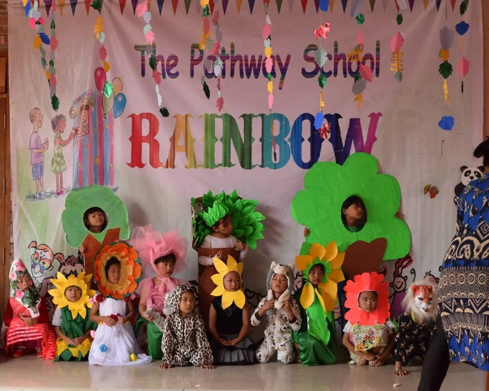

THE PATHWAY SCHOOL
Nehru Marg, Churachandpur 795128

SCHOOL HISTORY
The Pathway School had a humble beginning in 2000 and has made a tremendous stride in providing holistic education to children living in Churachandpur District. It was called Kindergarten till 2014. It has been re-named as The Pathway School in 2015.
EXCITING EXTRACURRICULARS
We believe that every child is gifted with creativity, though in varying degrees. To harness such creative traits and tap the talent at an early age, We offer a wide variety of extracurricular activities; We conduct competitions such as Vocal Music, Elocution, Quiz, Painting, and a host of others to give opportunities to our students to explore and develop their talents. The school is divided into four groups: Brahmaputra (Green), Yamuna (Blue), Ganga (Yellow) and Narmada (Red). The Annual School Sports and Rainbow, the School Carnival are conducted during September every year.